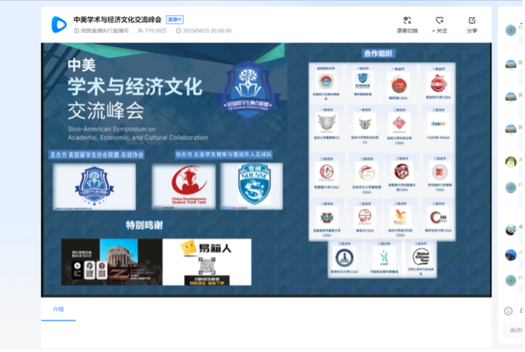
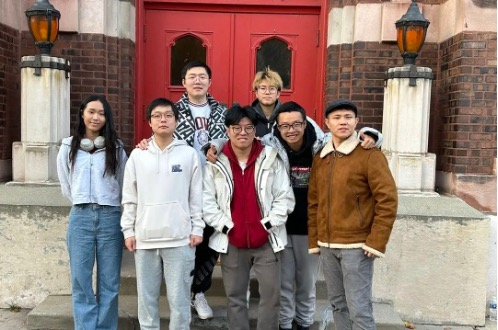
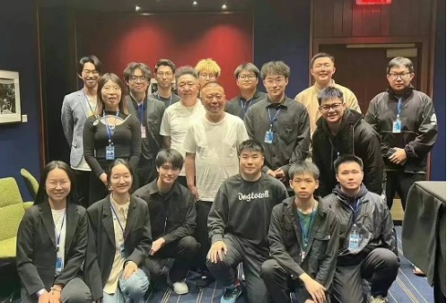
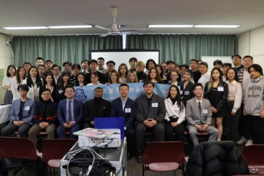

Sino-American Symposium on Academic, Economic, and Cultural
The Sino-American Symposium on Academic, Economic, and Cultural Collaboration concluded online, attracting millions of views. Sponsored by Boluo Education Consulting, Yixiang Ren Cross-border Logistics, and Scientific Horizons Healthcare Inc., and hosted by the United States Student Association Alliance and the Eastern United States Student Association, with co-organization from the North American Student Think Tank and the Syracuse Chinese Football Club, including major cooperation from the All-American Zhejiang General Chamber of Commerce Youth Committee, the American Southwest Student Federation, USC CSSA, the Young Elites Alliance, and the Chinese Students' Union (Chinese Union) UCD, UCLA branches, along with many secondary partners, the event successfully ended on the evening of August 27, 2023, Beijing time. The symposium was divided into three parts: Sino-American academic discussions, business experience sharing seminars, and future trends seminars. Starting from 8 pm Beijing time on August 25 to midnight on August 27, the symposium was globally broadcasted online via the Weizan platform, accumulating a total of 7.19 million clicks and 1 million likes over three days. The Sino-American Symposium on Academic, Economic, and Cultural Collaboration is dedicated to facilitating Sino-American communication and cooperation through academic, economic, and cultural exchanges, offering a deep communication and exchange platform for Chinese and American academic experts, business professionals, and scholars. This year's symposium invited over twenty cooperating organizations and dozens of industry leaders. Participants from various fields and backgrounds, including corporate representatives, academia, culture, trade, digital industry, education, and media, caused a sensation across all sectors of Chinese and American society.
Bring Warmth to Chicago
On Thanksgiving Eve, we partnered with the Chinese Mutual Aid Association (CMAA) to raise, organize, and distribute winter clothing to new Hispanic immigrants in the Chicago area to bring warmth to their winter! The Eastern Association gives back to the community and strives to demonstrate the warmth and inclusiveness of the international student community!
DeYunShe Volunteering
As the co-organizer of the Deyunshe tour in the United States, we provide more than 50 volunteers for the Deyunshe tour in the United States to ensure that every show is full and smooth.
Inaugural Ceremony East Association of USOSU
On December 23, 2023, local time, the establishment ceremony of the Eastern Association of American Students was successfully held at the Boston Public Library. Tania Fernandes Anderson, the District 7 Councilor of Boston, represented Joshua Champagn, the founder of the American Student Association Alliance. Guests such as Wu Yuzhou, the founder of the American Student Association Alliance, Liu Zhengxin, the former chairman, Dong Zhihao, the current chairman, Han Taige, the executive chairman and chairman of the Eastern Association of American Students, as well as vice presidents Liu Yitong, Lu Yao, Zhuang Kaixiang, Yang Kaiyi, and others attended the event. The event was hosted by Zhang Yibo, Secretary-General of the American Student Association Alliance, and Hu Xiaoman, a member of the media department of the Eastern Association of American Students.